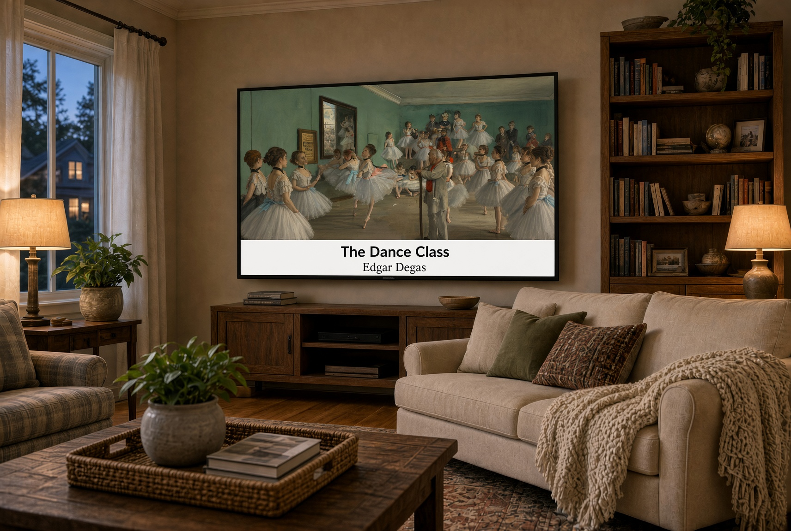

How to display art on your TV without a subscription.
If your television can play JPEG photos from a USB drive, it may already have what it needs to become a rotating art display.
Use the screen you already own
You do not necessarily need a dedicated art television, a streaming app, or a monthly service to display paintings at home. Many televisions include a built-in photo viewer that can run a slideshow from USB storage.

What makes an art slideshow look good?
The complete painting
Paintings are never cropped or stretched to fill a television. Vermeer did not paint on a 16:9 television-shaped canvas—so we do not cut away part of his art to make it fit one. Each work is shown in its original proportions, with a coordinated background where needed.
Readable captions
Titles and artists let viewers identify the work without interrupting the room.
A relaxed interval
Changing the image every 45–90 seconds gives each painting time to be enjoyed.
Repeat mode
Looping keeps the collection moving without requiring constant attention.
USB art versus streaming art
A USB collection is local: it does not depend on Wi-Fi or an active subscription to The Family Gallery TV. The television reads image files directly from the drive. Because you have direct access to the files, you do not need to pay for a subscription or have your art interrupted by ads. You control the art. The exact controls and supported features still depend on the TV model.
Protect your screen
Follow your television manufacturer’s guidance for long-duration image display. Rotating images is preferable to leaving one static picture on screen indefinitely, particularly on display technologies susceptible to image retention.
Start with a curated collection.
More than 600 captioned works, prepared on USB.